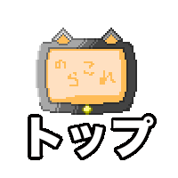

ほげほげ
テンプレート
新しいページを作成する場合はこのページをコピーしてから作ると良いかも
猫について
ネコ（猫）は、狭義にはネコ目（食肉目）- ネコ亜目- ネコ科- ネコ亜科- ネコ属- ヤマネコ種- イエネコ亜種に分類される小型哺乳類であるイエネコ（家猫、学名：Felis silvestris catus）の通称である。人間によくなつくため、イヌ（犬）と並ぶ代表的なペットとして世界中で広く飼われている。

＝＝＝
にゃんこたろう
- 主な生息地: 京都府
- 最終発見報告: 2015/10/16
- 総合評価 ☆☆☆☆☆
ああああ
- 主な生息地: 京都市
- 最終発見報告: 2015/10/20
- いいね: ０回